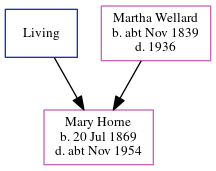

Mary Jane Horne 1869 - c1954
[ Home ] | [ Calendar ] | [ Surnames Index ] | [ Census Index ] | [ Family History ]An incapacitated and confectioner's assistant and the child of George Horn (a brewery laborer) and Martha Wellard, Mary Horne, the first cousin three-times-removed on the father's side of Nigel Horne, was born in Ramsgate, Kent, England on Jul 20, 18691,2,3,4,5,6,7.
During her life, she was living at 76 Queen Street in Ramsgate on Apr 2, 187111 and on Apr 3, 188110; at 47 Queen Street in Ramsgate in 18913; at 38 Queen Street in Ramsgate on Mar 31, 19019; on The York Arms, King Street in Ramsgate on Apr 2, 19118; and at 7 Lawn Villas in Ramsgate on Sep 29, 19395.
She died c. Nov 1954 in Thanet, Kent, England7.
Parents
- George
- Martha was born c. Nov 1839
Citations
- 1871 England Census Online publication - Provo, UT, USA: The Generations Network, Inc., 2004.Original data - Census Returns of England and Wales, 1871. Kew, Surrey, England: The National Archives of the UK (TNA): Public Record Office (PRO), 1871. Data imaged from the National
- 1881 England Census Online publication - Provo, UT, USA: The Generations Network, Inc., 2004. 1881 British Isles Census Index provided by The Church of Jesus Christ of Latter-day Saints © Copyright 1999 Intellectual Reserve, Inc. All rights reserved. All use is subject to the
- 1891 England Census Online publication - Provo, UT, USA: The Generations Network, Inc., 2005.Original data - Census Returns of England and Wales, 1891. Kew, Surrey, England: The National Archives of the UK (TNA): Public Record Office (PRO), 1891. Data imaged from The National (Relation to Head of House: Assistant)
- 1901 England Census Online publication - Provo, UT, USA: The Generations Network, Inc., 2005.Original data - Census Returns of England and Wales, 1901. Kew, Surrey, England: The National Archives of the UK (TNA): Public Record Office (PRO), 1901. Data imaged from the National
- 1939 Register - Findmypast (was recorded at this address)
- England & Wales births 1837-2006 - Findmypast
- England & Wales deaths 1837-2007 - Findmypast
- 1911 Census for England & Wales - Findmypast (was age 42 and a general help in the household)
- 1901 England, Wales & Scotland Census - Findmypast (was age 31 and a servant in the household)
- 1881 England, Wales & Scotland Census - Findmypast (was age 11 and the daughter of the head of the household)
- 1871 England, Wales & Scotland Census - Findmypast (was age 1 and the daughter of the head of the household)
Media
1911 England, Wales & Scotland Census Transcription - GBC-1911-RG14-04520-0243-4
England & Wales births 1837-2006 - BMD/B/1869/3/AZ/000312/369
1901 England, Wales & Scotland Census - GBC/1901/0007760210
England & Wales deaths 1837-2007 Transcription - BMD-D-1954-4-AZ-000496-014
1939 Register - TNA/R39/1763/1763J/016/23
1881 England, Wales & Scotland Census - GBC/1881/0004853347
1871 England, Wales & Scotland Census - GBC/1871/0014296715
Family Tree
Generated by ged2site. Last updated on Jun 11, 2024